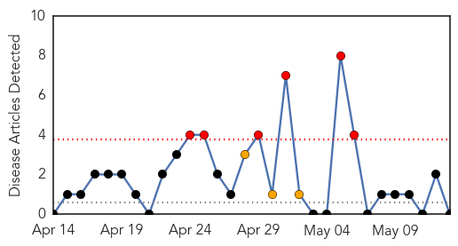
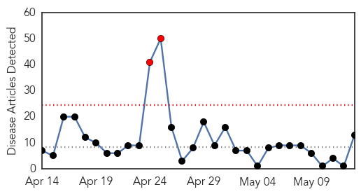
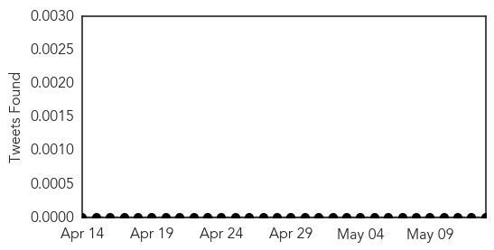

Pertussis
30-Day Web Trend
6 alerts, 3 warnings

30-Day Twitter Trend
0 alerts, 0 warnings

Article Locations


Article Confidences

Top Articles:
-
No articles found for May 13, 2014
Top Tweets:
-
No tweets found for May 13, 2014
Measles
30-Day Web Trend
2 alerts, 0 warnings

30-Day Twitter Trend
0 alerts, 0 warnings

Article Locations

Article Confidences

Top Articles:
- 0.991
- Health Highlights: May 13, 2014
- 0.989
- Ohio measles outbreak largest in USA since 1996
- 0.981
- Measles Outbreak In Ohio Adds 68 To Growing List Of U.S. Cases
- 0.965
- Ohio measles outbreak biggest since 1996
- 0.958
- News Scan for May 13, 2014
- 0.909
- Ask An Expert: Measles Cases in Madison County
- 0.905
- Measles outbreak prompts push for vaccinations in Lucas County
- 0.874
- In 2000, Measles Was Basically Eradicated In The US — Here's Why It's Now At An 18-Year High
- 0.845
- Washington state study a ‘warning’ for anti-vaxxers: Fraser Health
- 0.842
- WFMJ.com News weather sports for Youngstown-Warren Ohio
- 0.838
- More measles cases in Ohio and Tennessee
- 0.801
- Fox 28: South Bend, Elkhart IN News, Weather, Sports
- 0.736
- Rubella virus: CJ takes notice of 48 deaths in Sajawal
Top Tweets:
-
No tweets found for May 13, 2014